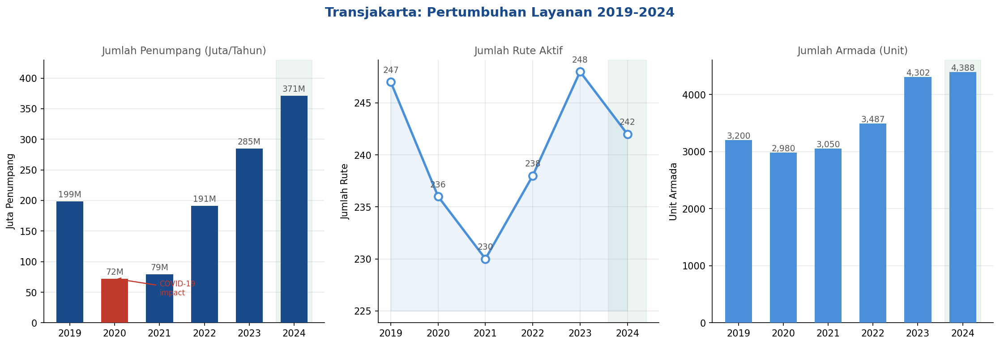
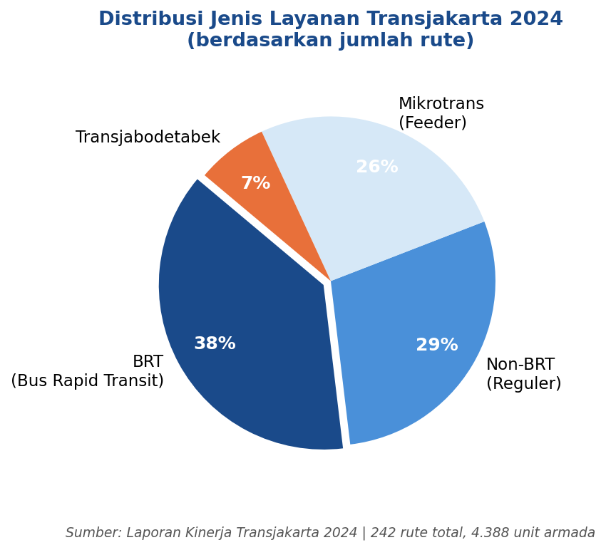
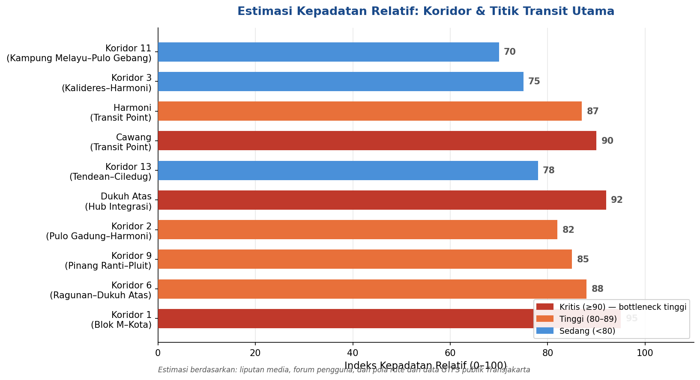
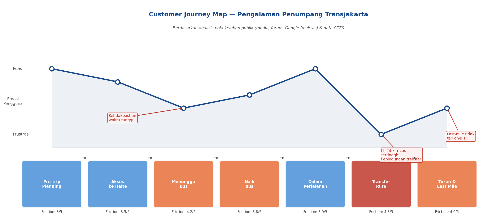
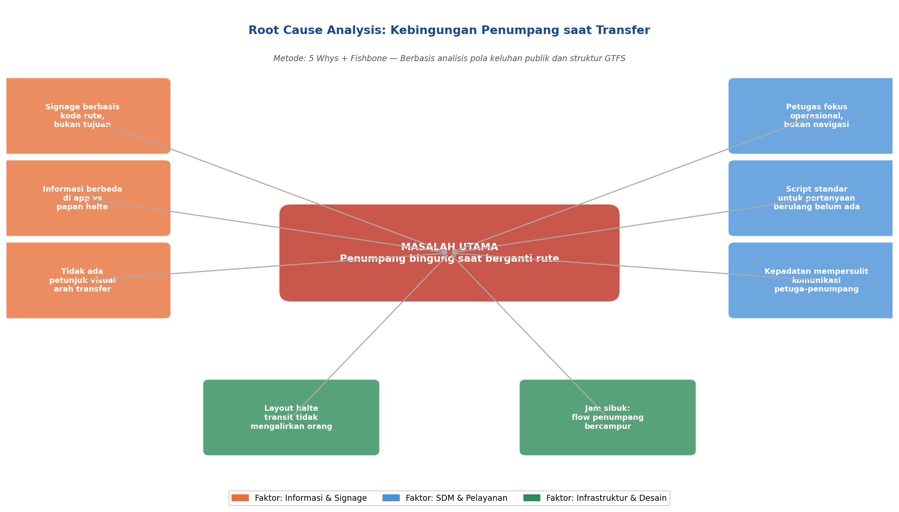
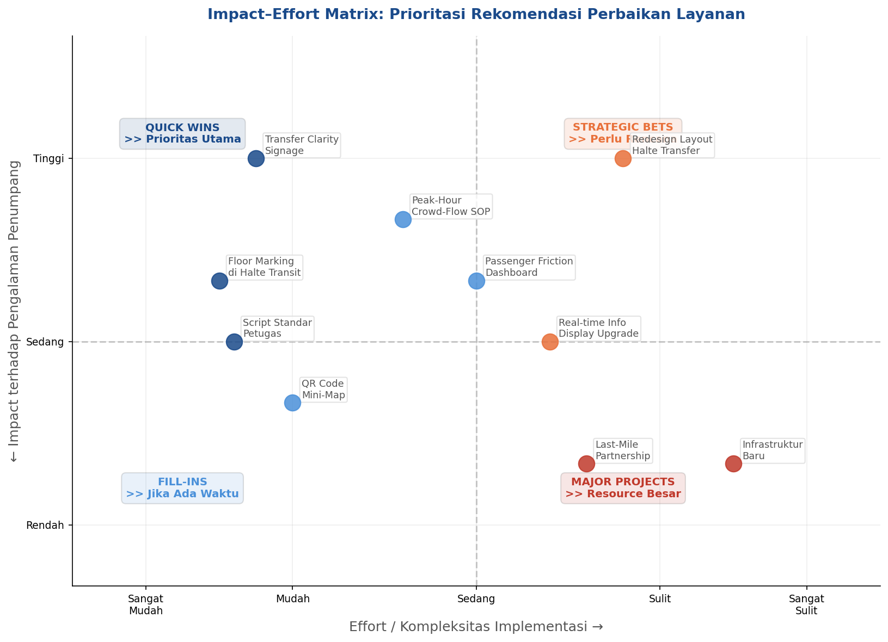
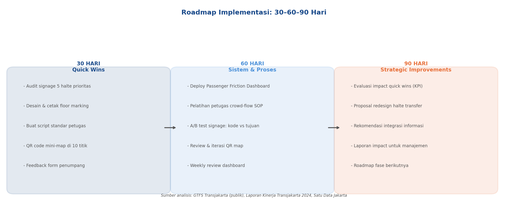

Basis Analisis
Desk-Based Validation
Analisis ini tidak mengklaim data internal atau observasi langsung. Seluruh temuan dibangun dari triangulasi sumber publik yang tersedia dan dapat diverifikasi secara independen.
| Sumber | Yang Divalidasi |
|---|---|
| Laporan Kinerja & GTFS Transjakarta | Skala layanan, struktur jaringan rute, konektivitas halte |
| Satu Data Jakarta | Data armada, rute, dan penumpang tahunan |
| Ulasan Pengguna (Google Maps) | Pain point berulang di halte-halte utama |
| Simulasi Perjalanan Digital | Kompleksitas rute, jumlah transfer, potensi titik bingung |
| Liputan Media & Forum Pengguna | Pola keluhan yang konsisten lintas waktu dan platform |
Catatan Metodologi
Berdasarkan triangulasi desk-based ini, tiga tema friction berulang teridentifikasi secara konsisten: transfer confusion, waiting-time uncertainty, dan first/last-mile disconnection.
Sample: Pola Ulasan Publik per Lokasi
Contoh kategorisasi ulasan Google Maps dari 4 titik transit utama — digunakan sebagai qualitative signal, bukan data representatif.
| Lokasi | Tema Dominan Ulasan | Friction yang Teridentifikasi | Implikasi |
|---|---|---|---|
| Dukuh Atas | Integrasi & kepadatan antar moda | Transfer complexity | Butuh transfer clarity system |
| Cawang | Antrean panjang, penumpukan | Passenger flow bottleneck | Butuh crowd-flow playbook |
| Harmoni | Banyak rute, bingung arah | Information overload | Butuh simplifikasi info rute |
| Blok M / CSW | Koneksi antar moda tidak jelas | Wayfinding friction | Butuh destination-based guidance |
Sumber: Ulasan publik Google Maps per halte (sampel, bukan data kuantitatif) · Diakses sebagai directional signal untuk desk-based validation
Latar Belakang
Skala & Pertumbuhan Layanan
Transjakarta melayani lebih dari 1 juta penumpang setiap hari dengan 242 rute dan 4.388 unit armada pada 2024 — pertumbuhan signifikan dari tahun-tahun sebelumnya. Pertumbuhan layanan tidak selalu berbanding lurus dengan kualitas pengalaman penumpang.

Sumber: Laporan Kinerja Transjakarta 2024 | Armada tumbuh 41% dari 2019 ke 2024; penumpang pulih melampaui level pre-pandemi

4 jenis layanan Transjakarta — BRT menjadi backbone utama dengan 38% dari total rute aktif
Analisis Jaringan
Indicative Corridor Complexity Index
Indeks kompleksitas relatif koridor dan titik transit utama — dikembangkan dari analisis konektivitas data GTFS publik, pola liputan media, dan ulasan pengguna yang tersedia. Bukan data resmi atau ukuran kepadatan aktual Transjakarta.

Indicative index — berbasis analisis konektivitas GTFS + triangulasi ulasan pengguna publik | Skala komparatif 0–100, bukan data operasional resmi
Insight Kunci
Titik transit interchange (Dukuh Atas, Cawang, Harmoni) menunjukkan indeks kepadatan tertinggi — bukan hanya karena volume, tetapi karena kompleksitas navigasi saat berpindah rute. Transfer experience menjadi prioritas utama diagnostik ini.
Framework Analisis
Customer Journey Map
Pemetaan pengalaman penumpang di 7 tahap perjalanan — dari perencanaan awal hingga last-mile — dengan identifikasi friction score dan titik emosi di setiap tahap.

Berdasarkan sintesis ulasan pengguna publik, simulasi perjalanan digital & analisis struktur GTFS Transjakarta
Temuan Utama
3 Friction Point Kritis
Tiga titik friction yang teridentifikasi secara konsisten di berbagai sumber validasi, diurutkan berdasarkan tingkat keparahan:
Transfer Route Confusion
Signage berbasis kode rute bukan tujuan, tidak ada petunjuk arah visual, layout halte yang tidak memisahkan arus masuk-keluar-transit.
Waiting Time Uncertainty
Ketidakpastian waktu tunggu saat jam sibuk menurunkan kepercayaan penumpang. Informasi real-time tidak konsisten di seluruh halte.
Last-Mile Disconnection
Koneksi halte ke destinasi akhir masih lemah, terutama di kawasan perumahan yang belum terjangkau Mikrotrans secara optimal.
Basis Friction Score
Skor friction (1–5) merupakan estimasi kualitatif yang dikembangkan dari: (a) frekuensi kemunculan tema keluhan dalam ulasan publik Google Maps di 6 halte utama, (b) kompleksitas navigasi dari simulasi perjalanan digital, dan (c) triangulasi dengan pola liputan media transportasi Jakarta. Skala ini bersifat komparatif dan indikatif — bukan pengukuran kuantitatif formal.
Root Cause Analysis
Mengapa Transfer Confusion Terjadi?
Menggunakan pendekatan 5 Whys dan Fishbone Diagram, akar permasalahan dipetakan ke tiga kelompok faktor yang saling berinteraksi.

Akar masalah tersebar di tiga domain: informasi & signage, SDM & pelayanan, serta infrastruktur & desain halte
Implikasi Solusi
Akar masalah yang tersebar di tiga domain berarti solusi parsial tidak akan cukup. Diperlukan intervensi berlapis — dimulai dari yang paling feasible (signage, script petugas) sebelum masuk ke perubahan infrastruktur berskala besar.
Prioritasi Rekomendasi
Impact–Effort Matrix
10 rekomendasi dipetakan berdasarkan potensi dampak terhadap pengalaman penumpang versus kompleksitas implementasinya.

Quick Wins di kuadran kiri atas menjadi prioritas utama — impact tinggi, effort rendah, bisa diimplementasi dalam 30 hari
Top 5 Rekomendasi Prioritas
- 1
Transfer Clarity Kit
Signage berbasis tujuan (bukan kode rute) + floor marking arah transfer di 5 halte transit prioritas. Biaya rendah, impact tinggi, dapat diimplementasi dalam 30 hari.
- 2
Script Standar Petugas
Panduan jawaban untuk 10 pertanyaan paling sering ditanyakan penumpang. Meningkatkan konsistensi dan kecepatan pelayanan tanpa investasi infrastruktur tambahan.
- 3
Peak-Hour Crowd-Flow SOP
Prosedur manajemen kepadatan saat jam sibuk dengan penambahan titik crowd-control di interchange tersibuk. Langsung mengurangi friction fisik.
- 4
Passenger Friction Dashboard
Sistem kategorisasi keluhan sederhana yang memungkinkan weekly review dan prioritasi perbaikan berbasis data, bukan asumsi semata.
- 5
QR Code Mini-Map
Peta navigasi halte dalam format QR yang bisa diakses penumpang via smartphone — terutama di titik transit dengan kompleksitas tinggi.
Implementation Plan
Roadmap 30–60–90 Hari
Rekomendasi dikelompokkan dalam tiga fase — dimulai dari intervensi yang paling feasible menuju perubahan sistemik yang membutuhkan resource lebih besar.

30 hari: quick wins · 60 hari: sistem & proses · 90 hari: evaluasi & strategic improvements